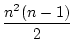
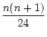

Solution 1.1:Strassen's method can be found at (Sedgewick, 1988, Page532).
Solution 1.2:The only two problems that can really occur have to do with the hatching line not meeting an edge `cleanly'. The first is the case where an edge of the polygon is horizontal and happens to coincide over its length with the hatching line. In this case there is no unique intersection point. The best approach in this case is to ignore this edge -- i.e. say that it does not intersect the hatch line.
The other problem comes when a hatch line passes through a vertex of the polygon. That vertex belongs to two edges, so it will be counted twice and add two points to the intersection list when you only really mean to add one point. This will, in general, screw up the sequence.
Solution 1.3:No solution offered.
Solution 1.4:The only real difference is in the algebra. The equations of our
hatch-lines are now something like y = mx + h where
m = tan . We
now have a slightly more complicated problem in deciding whether or
not a hatch-line meets an edge, but that's just algebra.
. We
now have a slightly more complicated problem in deciding whether or
not a hatch-line meets an edge, but that's just algebra.
Solution 1.5:No solution offered.
Solution 1.6:No solution offered.
Solution 1.7:No solution offered.
Solution 1.8:No solution offered.
Solution 1.9:
There seem to be two useful things to do -- initialise carefully, and
check each array element against the known second smallest
element. Here is one reasonable attempt
Solution 1.10:No solution offered.
Solution 1.11:No solution offered.
Solution 1.12:To get an explicit formula for Ann - 2, write an = Ann - 2 and note from the recurrence relation that
| an | = (n - 1) + (n - 2) + ... + 2 + 1, | |
=  . . |
We can also ask about Ann - 3. With the above experience, lets call this bn - 1. Then from the recurrence relation, we have bn = Ann - 2 = bn - 1 and b2 = A30 = 6. Thus
| bn | =  + bn - 1 | |
| = |
||
| = |
||
| = |
||
| = (3n2 - n - 4) + 4. |
Solution 1.13: No solution offered.
Solution 1.14:The algorithm is as follows:
We just want to count how many times each box is executed. Boxes A and B are only executed once. Boxes C, E and F are on a loop that the program goes round n - 1 times, so each of these is executed n - 1 times. That leaves box D; suppose it is visited d times. Clearly the minimum value of d is zero, which occurs whenever the list has its smallest element in first place. And the maximum value of d for a list of n elements is n - 1. This will occur when the list is in strictly decreasing order, so that the current value of the minimum has to be updated on each step.
Thus the time T(n) taken by the algorithm to find the minimum of n numbers lies in the range
In order to derive ``average'' values we assume that the lists that we
are dealing with are all the permutations of the list
(1, 2, 3, 4,..., n). There is nothing limiting about this assumption.
We further assume that all these permutations are equally
likely to be presented to the algorithm. Clearly
T(2) = 2.5 since
step D will be visited on half of all ``average'' inputs. Thus
 (2) = , and so
(2) = , and so
By adding up the areas of the rectangles that lie above the graph we get
Solution 1.15:Here is pseudocode for the minimum and second minimum element
algorithm. I don't think it is in the spirit of this question to
check that the list has at least three elements etc!
We shall refer to either of the second two cases as involving a detour. Our aim is to find the ``average'' number of detours d; since T(n) = 4n - 5 + d, this will give the ``average'' time to complete the algorithm.
Note that the actual numbers in the list are irrelevant. All that matters is their relative ordering. Thus we assume that we are dealing with lists of n distinct elements (we ignore the possibility that the lists with repeated elements). Then we may as well assume that the lists that we are dealing with are all the permutations of the list (1, 2, 3, 4,..., n). In addition assume that all these permutations are equally likely to be presented to the algorithm. Thus we seek the average number of detours executed when applying the algorithm to the permutations of (1, 2, 3,..., n), granted that all such permutations are equally probable.
We now compute the number of detours that occur when applying the
algorithm to each permutation in S4. Note that a detour occurs
precisely when we encounter a new minimum element in either third or
fourth place in the original list. The computation is given in
Table 1